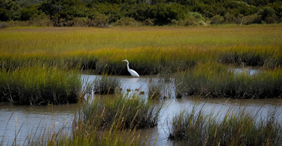
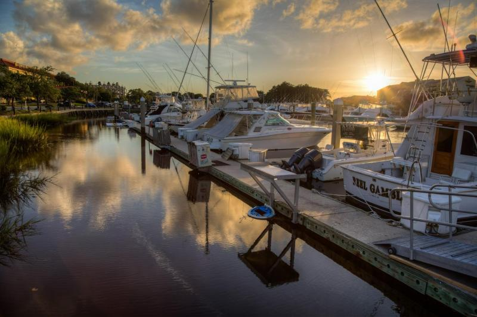
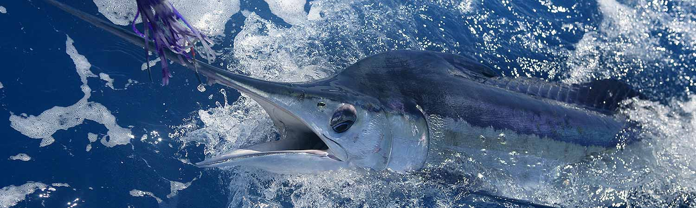

Welcome to Charleston's official fishing report website! Here you can read weekly fishing reports and forecasts created by local fishermen covering all of our coastal waters. Our reports cover everything from inshore creek fishing, to near-shore, to deep sea fishing in the Atlantic Ocean. CharlestonFishingReport.Com will also help you find the perfect fishing guide to book a trip with who will share their local knowledge to give you the best experience possible.

Getting started can be the hardest part of fishing here in Charleston. With countless options of places to purchase your equipment, it can quickly become overwhelming to try to decide on the best one. Some easy places to help give yourself a head start are Haddrell's Point Tackle, South Side Bait and Tackle, and Dick's Sporting Goods.

If you want to get the full fishing experience here in the low country, theres no better way to do it than to book a trip with one of our local fishing guides. The Charleston area is home to multiple marinas and boat launches, so no matter where you may be staying, there will be a location with one or more guiding services that are suitable for you. For a better website to find the right charter business for you, visit CharlestonCharterFishing.Com.

Copyright 2019© - Site Designed by Evan Tisdale